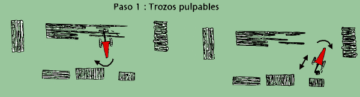

|
INFORME TÉCNICO TECFOR Nº 01 |
|
Clasificación y almacenamiento en cancha con trineumático
La maniobrabilidad
del trineumático TECFOR y la capacidad para cambiar rápidamente de dirección y velocidad , lo hace
ideal para la clasificación y almacenamiento de trozos (pulpables y aserrables) . La garra permite tomar
piezas individuales , armadas en una carga y almacenarlas en pilas . Se puede manejar fácilmente un rango
de tamaños desde postes de 1.6 m. hasta trozas aserrables (1,5 m³) y materiales de raleo del largo
total del árbol .
Se puede usar el TECFOR
en una operación de extracción a ras de suelo o de cable aéreo . Con un sistema de cable ,
el trineumático puede sacar madera desde debajo de la torre o acarrear el material a una zona de almacenamiento
y procesamiento secundario para carguíos posteriores .
El tamaño del equipo y su reducido radio de giro , permite el uso de pequeñas canchas a un lado de
los caminos .
El acanchamiento deberá mantenerse lo más pequeño posible para reducir la distancia que viaja
el trineumático . Las pilas , especialmente con las trozas aserrables grandes , deberán ubicarse
cerca de las zonas de procesamiento . En donde sea posible , se deberían usar 2 áreas de procesamiento
. Esto permite que los trozadores de cancha o cancheros y el TECFOR
trabajen independiente , reduciendo de este modo la interferencia
y mejorando la seguridad . La figura de abajo ilustra la disposición de acanchamiento que se desea .
Cuando llega
el camión , se despeja una de las áreas de procesamiento y se procede a cargar éste en el
centro de la cancha. Durante el carguío , la madera que extrae el skidder se lleva hacia la otra área
de procesamiento . Si la cancha se congestiona demasiado , las trozas extraídas se pueden dejar al borde
de ésta para que el TECFOR las ubique posteriormente .
El acanchamiento que se muestra es un área óptima en que se puede trabajar a ambos lados del camión
. En situaciones más difíciles , se aplicarán principios similares , pero pueden necesitar
modificación .
Algunos de los puntos a considerar son :
1.- Volúmenes y relaciones de los diferentes productos
que se producen: Los productos que tiene una mayor producción
se deberán apilar en un lugar de fácil carguío y de mejor acceso para los camiones . Los productos
que se producen en bajos volúmenes , se pueden apilar lejos del centro de actividad .
2.- Regularidad del carguío: Considere con que frecuencia estarán llegando los camiones , de cuánta congestión
se producirá durante el carguío . Se deberá disponer el acanchamiento para minimizar la interferencia
entre la carga , el madereo y los cancheros .
3.- El tamaño de la troza: Las trozas grandes que son difíciles de manejar , se deberán apilar cerca
del acceso de los camiones para reducir el viaje al cargar .
4.- Sendero de extracción de la máquina: Considere por donde va a transitar el trineumático . Deje suficiente
espacio para ello . Trate de minimizar la interferencia entre la extracción , clasificación , almacenamiento
y carguío .
5.- Sendero del camión: Desde dónde entrarán o abandonarán los camiones la cancha ; tienen
ellos que girar y cuán cerca pueden quedar de las diversas pilas .
Las trozas del árbol entero son entregadas y cortadas a su longitud por los cancheros . El TECFOR clasifica entonces
los productos y los apila para un posterior carguío . Las figuras siguientes ilustran el procedimiento de
clasificación y almacenamiento .
Clasificación y Almacenamiento :
Paso 1 : Trozos pulpables

Paso 2 : Trozo aserrable 1
Paso 3 : Trozo aserrable 2
Alineación de trozos pulpables
¡ Consulte por los rendimientos de su futuro EURO 2000 de TECFOR !